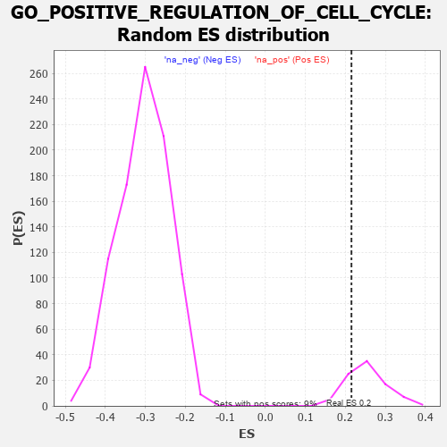

| | | Dataset | 7d |
| Phenotype | NoPhenotypeAvailable |
| Upregulated in class | na_pos |
| GeneSet | GO_POSITIVE_REGULATION_OF_CELL_CYCLE |
| Enrichment Score (ES) | 0.21503977 |
| Normalized Enrichment Score (NES) | 0.8531407 |
| Nominal p-value | 0.8333333 |
| FDR q-value | 0.8835292 |
| FWER p-Value | 1.0 |
Table: GSEA Results Summary
 Fig 1: Enrichment plot: GO_POSITIVE_REGULATION_OF_CELL_CYCLE
Fig 1: Enrichment plot: GO_POSITIVE_REGULATION_OF_CELL_CYCLE
Profile of the Running ES Score & Positions of GeneSet Members on the Rank Ordered List
| PROBE | GENE SYMBOL | GENE_TITLE | RANK IN GENE LIST | RANK METRIC SCORE | RUNNING ES | CORE ENRICHMENT | | 1 | PCBP4 | | | 44 | 2.875 | 0.0469 | Yes |
| 2 | SPDYA | | | 211 | 1.026 | 0.0445 | Yes |
| 3 | CDC45 | | | 239 | 0.950 | 0.0584 | Yes |
| 4 | INSM1 | | | 250 | 0.939 | 0.0743 | Yes |
| 5 | CNOT7 | | | 348 | 0.750 | 0.0756 | Yes |
| 6 | BAX | | | 387 | 0.711 | 0.0838 | Yes |
| 7 | RRP8 | | | 403 | 0.699 | 0.0946 | Yes |
| 8 | CNOT6 | | | 462 | 0.655 | 0.0992 | Yes |
| 9 | THOC1 | | | 507 | 0.627 | 0.1051 | Yes |
| 10 | CNOT2 | | | 514 | 0.625 | 0.1157 | Yes |
| 11 | KIF23 | | | 522 | 0.622 | 0.1262 | Yes |
| 12 | APEX1 | | | 577 | 0.604 | 0.1303 | Yes |
| 13 | CCNB1 | | | 581 | 0.601 | 0.1409 | Yes |
| 14 | RBL2 | | | 593 | 0.596 | 0.1504 | Yes |
| 15 | NDC80 | | | 616 | 0.590 | 0.1584 | Yes |
| 16 | AURKC | | | 633 | 0.583 | 0.1670 | Yes |
| 17 | PLRG1 | | | 644 | 0.579 | 0.1763 | Yes |
| 18 | CDC6 | | | 709 | 0.557 | 0.1783 | Yes |
| 19 | RAD21 | | | 779 | 0.538 | 0.1793 | Yes |
| 20 | HCFC1 | | | 902 | 0.506 | 0.1731 | Yes |
| 21 | STOX1 | | | 905 | 0.506 | 0.1820 | Yes |
| 22 | CCND2 | | | 949 | 0.496 | 0.1856 | Yes |
| 23 | AKT1 | | | 1040 | 0.476 | 0.1828 | Yes |
| 24 | CDK10 | | | 1092 | 0.465 | 0.1848 | Yes |
| 25 | SRC | | | 1128 | 0.459 | 0.1888 | Yes |
| 26 | CKS2 | | | 1165 | 0.452 | 0.1924 | Yes |
| 27 | CCNY | | | 1168 | 0.451 | 0.2004 | Yes |
| 28 | TFDP1 | | | 1180 | 0.450 | 0.2072 | Yes |
| 29 | CDC73 | | | 1265 | 0.436 | 0.2045 | Yes |
| 30 | CNOT3 | | | 1274 | 0.435 | 0.2114 | Yes |
| 31 | CARM1 | | | 1413 | 0.408 | 0.2013 | Yes |
| 32 | E2F4 | | | 1501 | 0.390 | 0.1974 | Yes |
| 33 | CDC27 | | | 1585 | 0.377 | 0.1937 | Yes |
| 34 | PAF1 | | | 1588 | 0.376 | 0.2003 | Yes |
| 35 | CCNK | | | 1596 | 0.374 | 0.2062 | Yes |
| 36 | CDK4 | | | 1626 | 0.370 | 0.2093 | Yes |
| 37 | KMT2E | | | 1730 | 0.350 | 0.2026 | Yes |
| 38 | ESPL1 | | | 1734 | 0.349 | 0.2086 | Yes |
| 39 | LRP5 | | | 1769 | 0.342 | 0.2105 | Yes |
| 40 | LSM10 | | | 1783 | 0.340 | 0.2150 | Yes |
| 41 | NUP62 | | | 1871 | 0.324 | 0.2099 | No |
| 42 | CUL3 | | | 1893 | 0.321 | 0.2131 | No |
| 43 | FOXO4 | | | 2004 | 0.304 | 0.2046 | No |
| 44 | MEIS2 | | | 2063 | 0.296 | 0.2027 | No |
| 45 | INO80 | | | 2120 | 0.288 | 0.2008 | No |
| 46 | DTL | | | 2154 | 0.284 | 0.2018 | No |
| 47 | CNOT4 | | | 2161 | 0.283 | 0.2062 | No |
| 48 | ATAD5 | | | 2197 | 0.277 | 0.2068 | No |
| 49 | CDK2 | | | 2226 | 0.272 | 0.2082 | No |
| 50 | MED25 | | | 2320 | 0.257 | 0.2010 | No |
| 51 | MIF | | | 2357 | 0.252 | 0.2011 | No |
| 52 | SIN3A | | | 2361 | 0.251 | 0.2053 | No |
| 53 | MTA3 | | | 2443 | 0.237 | 0.1993 | No |
| 54 | FEN1 | | | 2446 | 0.237 | 0.2034 | No |
| 55 | CDT1 | | | 2505 | 0.226 | 0.2001 | No |
| 56 | PHB2 | | | 2712 | 0.197 | 0.1775 | No |
| 57 | BECN1 | | | 2828 | 0.179 | 0.1661 | No |
| 58 | NR2E1 | | | 2844 | 0.177 | 0.1674 | No |
| 59 | FGFR2 | | | 2895 | 0.167 | 0.1641 | No |
| 60 | WNT4 | | | 3023 | 0.146 | 0.1507 | No |
| 61 | BRCA2 | | | 3024 | 0.146 | 0.1533 | No |
| 62 | CUL4A | | | 3097 | 0.137 | 0.1467 | No |
| 63 | DDX3X | | | 3388 | 0.091 | 0.1114 | No |
| 64 | MED1 | | | 3405 | 0.089 | 0.1110 | No |
| 65 | CNOT1 | | | 3473 | 0.081 | 0.1039 | No |
| 66 | GLI1 | | | 3489 | 0.079 | 0.1035 | No |
| 67 | DMRT1 | | | 3546 | 0.068 | 0.0976 | No |
| 68 | HSF1 | | | 3718 | 0.039 | 0.0766 | No |
| 69 | CDC16 | | | 3724 | 0.038 | 0.0766 | No |
| 70 | SPAST | | | 3801 | 0.027 | 0.0674 | No |
| 71 | NIPBL | | | 3900 | 0.010 | 0.0551 | No |
| 72 | PKN2 | | | 4060 | -0.017 | 0.0352 | No |
| 73 | TAL1 | | | 4064 | -0.018 | 0.0352 | No |
| 74 | ABL1 | | | 4125 | -0.027 | 0.0280 | No |
| 75 | RPTOR | | | 4252 | -0.050 | 0.0129 | No |
| 76 | PCID2 | | | 4258 | -0.051 | 0.0132 | No |
| 77 | KIF3B | | | 4450 | -0.085 | -0.0095 | No |
| 78 | POC1A | | | 4768 | -0.151 | -0.0471 | No |
| 79 | SRPK2 | | | 4790 | -0.155 | -0.0469 | No |
| 80 | TERT | | | 4801 | -0.157 | -0.0454 | No |
| 81 | ATRX | | | 4929 | -0.184 | -0.0582 | No |
| 82 | EP300 | | | 4941 | -0.186 | -0.0562 | No |
| 83 | DRD2 | | | 5088 | -0.221 | -0.0707 | No |
| 84 | DDX11 | | | 5102 | -0.225 | -0.0682 | No |
| 85 | ATM | | | 5210 | -0.249 | -0.0773 | No |
| 86 | GPSM2 | | | 5228 | -0.252 | -0.0749 | No |
| 87 | CDK1 | | | 5264 | -0.262 | -0.0745 | No |
| 88 | PLK4 | | | 5397 | -0.295 | -0.0860 | No |
| 89 | FGFR1 | | | 5543 | -0.332 | -0.0983 | No |
| 90 | SPHK1 | | | 5576 | -0.339 | -0.0962 | No |
| 91 | CDC23 | | | 5756 | -0.394 | -0.1118 | No |
| 92 | CCNT2 | | | 5804 | -0.406 | -0.1104 | No |
| 93 | CXCR5 | | | 5954 | -0.456 | -0.1210 | No |
| 94 | SH2B1 | | | 5963 | -0.459 | -0.1136 | No |
| 95 | CENPJ | | | 5968 | -0.460 | -0.1058 | No |
| 96 | CALR | | | 6077 | -0.499 | -0.1104 | No |
| 97 | INSR | | | 6204 | -0.538 | -0.1166 | No |
| 98 | CDC42 | | | 6236 | -0.548 | -0.1105 | No |
| 99 | TFAP4 | | | 6254 | -0.556 | -0.1025 | No |
| 100 | SVIL | | | 6259 | -0.558 | -0.0929 | No |
| 101 | TPR | | | 6597 | -0.709 | -0.1228 | No |
| 102 | EGFR | | | 6708 | -0.765 | -0.1228 | No |
| 103 | GIPC1 | | | 6819 | -0.826 | -0.1217 | No |
| 104 | CDK9 | | | 7266 | -1.138 | -0.1577 | No |
| 105 | MSX2 | | | 7299 | -1.171 | -0.1404 | No |
| 106 | OVOL1 | | | 7341 | -1.214 | -0.1235 | No |
| 107 | CASP2 | | | 7442 | -1.322 | -0.1120 | No |
| 108 | ASNS | | | 7595 | -1.547 | -0.1031 | No |
| 109 | PKD1 | | | 7628 | -1.611 | -0.0778 | No |
| 110 | CSPP1 | | | 7632 | -1.623 | -0.0486 | No |
| 111 | PKD2 | | | 7822 | -2.167 | -0.0330 | No |
| 112 | PLCB1 | | | 7904 | -2.841 | 0.0085 | No |
Table: GSEA details [plain text format]

Fig 2: GO_POSITIVE_REGULATION_OF_CELL_CYCLE: Random ES distribution
Gene set null distribution of ES for GO_POSITIVE_REGULATION_OF_CELL_CYCLE